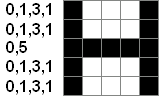

Castor s'amuse à dessiner des lettres majuscules en coloriant en noir les carreaux sur une feuille à petits carreaux. Ensuite, il code son dessin à l'aide d'une suite de chiffres qui décrit le nombre de carreaux blancs et de carreaux noirs.
Par exemple :Il construit le code comme suit : pour chaque ligne, la suite de chiffres indique alternativement le nombre de carreaux blancs au début de la ligne, puis le nombre de carreaux noirs qui suivent, et ainsi de suite jusqu'à avoir décrit tous les carreaux de la ligne. La suite de chiffres commence toujours par un nombre de carreaux blancs.
Ainsi par exemple, sur le dessin du T de l'exemple, la première ligne comporte 0 carreau blanc, puis 5 carreaux noirs, la seconde ligne comporte 2 carreaux blancs puis 1 carreau noir puis 2 carreaux blancs, etc.
Castor a dessiné une deuxième lettre majuscule, dont le code en chiffres est le suivant.
0,1,3,1
0,1,3,1
0,5
0,1,3,1
0,1,3,1
De quelle lettre s'agit-il ? Inscrivez la lettre dans la zone ci-dessous :
On peut remarquer que les deux lignes du haut et les deux lignes du bas sont toutes identiques, et que seule la ligne du milieu est différente des autres. Cela nous donne déjà un indice sur la lettre, et nous permet de nous concentrer sur le décodage de deux lignes seulement.
La ligne du milieu contient 0 pixel blanc, suivi de 5 pixels noirs. C'est donc une barre horizontale noire qui traverse toute la grille.
Les autres lignes commencent par 0 pixel blanc, puis 1 pixel noir, puis 3 pixels blancs, puis 1 pixel noir. On a donc un pixel noir à chaque extrémité de la ligne, avec du blanc au milieu.

La réponse était donc "H".
Les images affichées sur un écran d'ordinateur sont divisées en une grille de points appelés pixels. Dans le cas simplifié d'une image en noir et blanc, chaque pixel peut être soit éteint (noir), soit allumé (blanc). Pour des images en couleur, le principe est le même, mais chaque pixel peut avoir une couleur quelconque.
La mémoire d'un ordinateur ne peut contenir que des nombres, les uns à la suite des autres. Pour stocker une image, la manière la plus simple consiste à stocker deux entiers indiquant ses dimensions, puis un entier pour chaque pixel. Ainsi le "T" représenté dans l'énoncé pourrait être stocké comme la suite d'entiers suivantes :
5 5 1 1 1 1 1 0 0 1 0 0 0 0 1 0 0 0 0 1 0 0 0 0 1 0 0
Dans la mémoire de l'ordinateur, ils sont simplement stockés les uns après les autres :
5 5 1 1 1 1 1 0 0 1 0 0 0 0 1 0 0 0 0 1 0 0 0 0 1 0 0
Le mode de représentation présenté dans l'énoncé permet de stocker les images en utilisant moins de mémoire. Plutôt que d'utiliser un entier par pixel, on n'utilise qu'un entier pour toute une suite de pixels de même couleur. Le "T" peut ainsi être stocké en mémoire de la manière suivante :
5 5 0 5 2 1 2 2 1 2 2 1 2 2 1 2
On voit que le nombre d'entiers est réduit par rapport à la version précédente. Lorsque les images sont grandes et contiennent de grandes zones unies, on utilise nettement moins de mémoire que si l'on utilise un nombre pour représenter chaque pixel.
Ce mode de stockage fait par exemple partie des techniques de compression utilisées pour le format d'images PNG, parmi les plus utilisés.